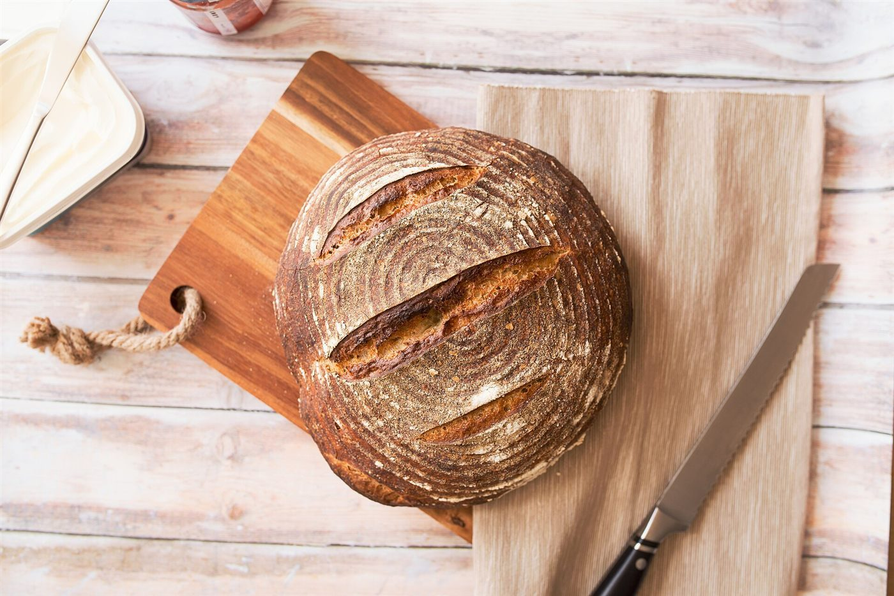
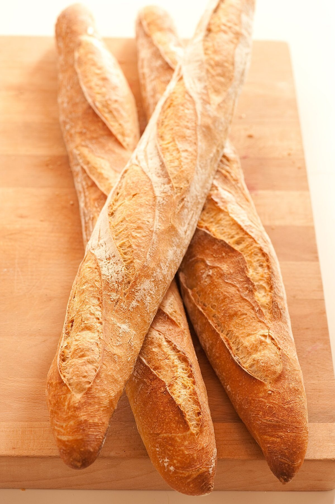
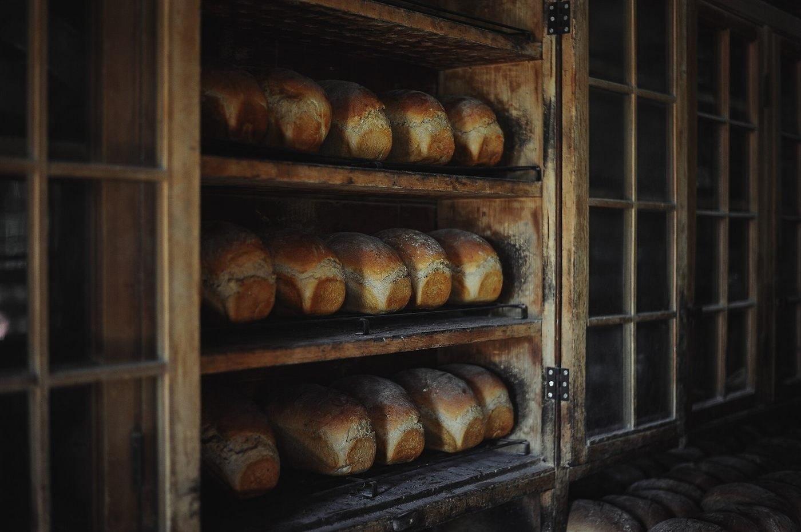

Menu
メニュー
取り扱い商品・価格は確認できていないため、すべて準備中です。ベーカリーであること以外は、断定しません。
Shelf timetable
棚の時刻表
朝準備中
昼準備中
夕準備中
価格準備中
お店に並ぶ商品は分かっていません。下の写真は、パンのイメージとして選んだフリー素材で、ときのぱんの商品ではありません。





取り扱い商品・価格は確認できていないため、すべて準備中です。ベーカリーであること以外は、断定しません。
お店に並ぶ商品は分かっていません。下の写真は、パンのイメージとして選んだフリー素材で、ときのぱんの商品ではありません。


